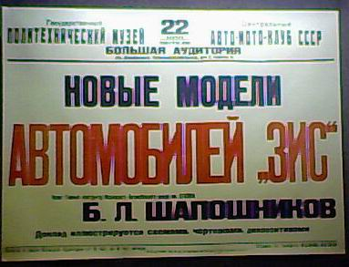
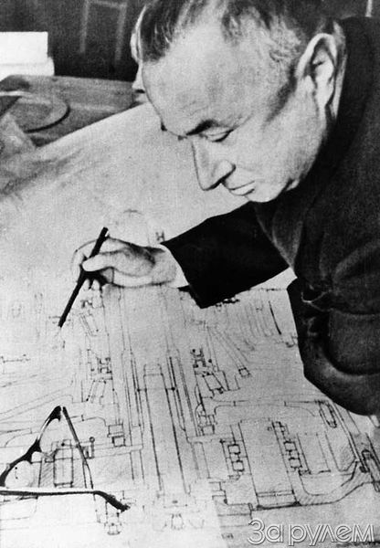

Борис Львович Шапошник

Афиша 1938 года с объявлением о лекции Главного Конструктора Московского Автомобильного Завода имени Сталина Бориса Львовича Шапошникова, хранящаяся в Политехническом Музее в Москве.
Б.Л. Шапошник (К 100-летию со дня рождения)
В. Е. Чвялев Минский завод колесных тягачей
С сайта журнала "Автомобильная промышленность", 2002 год, № 12
Фото из журнала За рулем №5 1997
17 декабря 2002 г. исполнилось 100 лет со дня рождения Бориса Львовича Шапошника — главного конструктора СКБ-1 (в дальнейшем — УГК-2) Минского автозавода, героя Социалистического Труда, лауреата Ленинской и Государственной премий СССР, Заслуженного деятеля науки и техники БССР, доктора технических наук, кавалера многих государственных наград. Человека, с чьим именем связаны разработки и освоение в производстве множества разнообразных автотранспортных средств, в том числе таких, которые осваивались в стране впервые. Особое место в этом ряду занимают полноприводные многоосные шасси и тягачи для перевозки крупногабаритных, неделимых, тяжеловесных грузов в условиях различных дорог и местности.
Будущий главный конструктор родился в 1902 г. в белорусском городе Пинске в многодетной семье скорняка-ремесленника. В неполных 15 лет начал трудиться по найму: с 1917 по 1920 г. был подручным на мелких строительных работах. В 1920 г. уехал в Москву и поступил учиться на рабфак при механическом институте имени М. В. Ломоносова, а после его окончания стал студентом лучшего технического вуза страны — МВТУ имени Н. Э. Баумана, где не только учился. Еще будучи студентом-дипломником, в 1929 г. работал на Московском автозаводе сначала техником рессорного цеха, а в декабре 1930 г., после защиты диплома, — инженером- конструктором конструкторского отдела. Здесь он прошел практически все конструкторские должности, в том числе такие, как временно исполняющий обязанности главного конструктора (декабрь 1938 — середина 1939 г.) и, наконец, главный конструктор.
В ноябре 1941 г. Б. Л. Шапошник, как и большинство работников предприятия, эвакуирован в г. Ульяновск, где стал главным конструктором вновь организованного Ульяновского автозавода. Об успехах его труда в годы Великой Отечественной войны свидетельствует тот факт, что в 1944 г. Президиум Верховного Совета СССР удостоил его высшей трудовой награды того времени — ордена Трудового Красного Знамени. Как сказано в Указе, "за выполнение заданий по производству автомобилей".
В 1946 г. в связи с переводом объекта производства на Новосибирский автозавод министр автомобильной промышленности своим приказом назначает Бориса Львовича главным конструктором этого завода, а в январе 1949 г. откомандировывает его на Минский автозавод, назначив главным конструктором- начальником "конструкторского бюро объекта" с задачей "разработать конструкторскую документацию, изготовить и провести испытания опытных образцов, поставить на серийное производство автомобиль- самосвал МАЗ-525 грузоподъемностью 25 т". Этот приказ (№ 561 от 01.11.1949 г.) сохранился. Вот что записано в его первом пункте: "Перевести с Новосибирского автомобильного завода личный состав отдела главного конструктора и экспериментального цеха во главе с главным конструктором тов. Шапошником Б. Л. на Минский автомобильный завод".
Был выполнен не только этот, но и все другие пункты приказа, причем в сроки, которые даже по нынешним временам кажутся рекордно короткими: разработана конструкторская документация по МАЗ-525, изготовлены опытные образцы, проведены их испытания и уже в сентябре 1950 г. начат серийный выпуск нового автомобиля. То есть на все это, включая переезд к новому месту работы, ушло всего 10 месяцев.

В 1951 г. в составе МАЗа был организован цех тяжелых АТС, в котором выпускали 25-тонные самосвалы. Спустя семь лет, в 1958 г., Жодинский завод "Дормаш" преобразован в Белорусский автозавод, специализированный на выпуске карьерных самосвалов. Он с 1959 г. и начал выпуск автомобилей МАЗ- 525. Но еще раньше, в сентябре 1953 г., приказом директора Минского автозавода от 30.09.1953. в составе отдела главного конструктора организовывается конструкторское бюро по дизель-моторам, а в составе экспериментального цеха — лаборатории двигателей, топлив и масел. Руководство конструкторскими и экспериментальными работами по дизелестроению приказ возлагал на главного конструктора объекта Б. Л. Шапошника. И он, как всегда, с задачей справился. Новое конструкторское бюро выполнило большой объем работ по созданию и доводке 12-цилиндрового двигателя для большегрузных машин. Об их уровне и качестве говорит тот факт, что руководитель КБ, заместитель главного конструктора Г. Д. Чернышев, в 1960 г. назначен главным конструктором Ярославского моторного завода.В 1954 г. постановлением Совета Министров СССР в составе Минского автозавода создано специальное конструкторское бюро № 1 (СКБ-1). Его задача — проектирование и постановка на серийное производство многоосных большегрузных полноприводных тягачей специального (военного) назначения. Главным конструктором СКБ-1 назначается Б. Л. Шапошник, ставший к тому времени ведущим специалистом страны в этой специфической области, обладающим отличной инженерной подготовкой, широким техническим кругозором и богатым практическим опытом. Он сумел сплотить в единый дружный коллектив как высококвалифицированных, так и молодых специалистов, создать в нем творческую товарищескую обстановку, обеспечить технический и профессиональный рост молодежи. В частности, поручая молодым специалистам сложные конструкторские разработки, прививая им чувство ответственности за качество и своевременность их выполнения, приучая не бояться новых и сложных задач. Например, одновременно с проектированием многоосных полноприводных тягачей СКБ-1 занимается созданием инженерных землеройных машин: в 1955 г. по его проекту изготовлены два тягача МАЗ-528, ставшие прототипами инженерного колесного тягача, а в 1956 г. — первый одноосный тягач МАЗ-529, который после заводской доработки и государственных испытаний идет в серийное производство. Кроме того, по результатам испытаний МАЗ-528 для обеспечения универсальности базы землеройного оборудования изменили как схему, так и компоновку тягача. В итоге — опытные образцы нового универсального инженерного колесного тягача (ИКТС) МАЗ-538. Конструкторскую документацию по нему в 1963 г. передали Курганскому заводу колесных тяга- чей, который и приступил к его серийному производству.
Тягач МАЗ-538 получился универсальным: он был способен работать с монтируемым спереди и сзади (толкаемым и буксируемым) инженерным оборудованием. При этом транспортные перемещения и буксировка прицепов выполнялись всегда управляемыми колесами вперед, что значительно облегчало управление тягачами. Поэтому КЗКТ выпускал этот тягач до начала 1990-х годов, т. е. в течение почти 30 лет.
Технику, разработанную СКБ-1 под руководством Б. Л. Шапошника, выпускали не только МАЗ, БелАЗ и КЗКТ, но и Могилевский завод. То есть практически все предприятия страны, занятые полноприводными тяжелыми АТС. Но основным направлением работы Б. Л. Шапошника были многоосные полноприводные тяжелые тягачи специального назначения, соответствующие техническим требованиям Министерства обороны. Проектирование этих сложных машин было начато фактически с нуля. Причем главному конструктору, чтобы удовлетворить потребности армии, приходилось принимать неординарные конструкторские решения не только по компоновке, но и по всем узлам и системам тягачей. Тем не менее ему и возглавляемому им коллективу конструкторов всегда удавалось в кратчайшие сроки разрабатывать и утверждать в установленном порядке эскизно-технические проекты тягачей, изготовлять опытные образцы и проводить их испытания. Типичный пример — тягачи МАЗ-535А и МАЗ-537: конструктивное исполнение почти всех их узлов было действительно "впервые в отечественном автомобилестроении". Например, их высокие проходимость, грузоподъемность и тягово-динамические характеристики достигнуты за счет применения колесной формулы 8 х 8; силовой установки, обеспечивающей высокую удельную мощность; оригинальной ГМП; двухскоростной раздаточной коробки; тележечной (2 + 2) схемы размещения мостов; управления колесами двух передних мостов; полной дифференциальной схемы привода всех колес; независимой подвески всех колес, обеспечивающей им большой ход при минимальных ускорениях (в том числе вертикальных) благодаря шинам низкого давления, торсионам и гидроамортизаторам; двухступенчатых приводов мостов (в том числе колесной планетарной передачи); пневмогидравлических тормозов; просторных, удобных кабин; центральной, управляемой из кабины водителя системы накачки шин и др.
Первые партии тягачей МАЗ-535А и МАЗ-537 так же, как и тягачей МАЗ-529 и МАЗ-538, всегда изготовляли на МАЗе, а затем конструкторскую документацию на них передавали на КЗКТ для организации их серийного производства. Причем следует отметить добротность и прогрессивность конструкций СКБ-1: к примеру, одна из модификаций тягача МАЗ-537, КЗКТ-537, выпускается до настоящего времени.
В начале 1960-х годов Б. Л. Шапошник приступил к выполнению очередного задания — созданию специального шасси высокой проходимости, предназначенного для монтажа ракетных пусковых установок. Используя наработанный опыт по полноприводным тягачам, коллектив СКБ-1, как всегда, в сжатые сроки разработал конструкторскую документацию, значительно увеличив число новых технических решений, обеспечивающих необходимое повышение технических характеристик и многолетний серийный выпуск шасси. Итог — шасси МАЗ-543, обладающее многими преимуществами по сравнению с зарубежными шасси-аналогами.
Во-первых, у него была сравнительно небольшая собственная масса, поскольку для изготовления нагруженных деталей применили (опять впервые) высоколегированные стали, а для тяжелонагруженных кронштейнов, картерных деталей, ободьев колес — литейные алюминиевые сплавы.
Во-вторых, конструкторы обеспечили небольшие вертикальные ускорения, действующие на груз, выполнив раму из тонкого низколегированного стального листа, что сделало ее упругой, а также применив широкопрофильные шины низкого давления и независимую торсионную подвеску.
В-третьих, использовав стеклопластик, конструкторы сумели сделать кабину (и некоторые другие крупногабаритные детали) обладающей высокими термошумоизоляцией, прочностью и ремонтопригодностью, т. е. не боящейся повторных пусков ракет.
Таким образом, есть все основания утверждать, что шасси МАЗ-543 стало для автомобильной промышленности событием этапным, той основой, на которой в дальнейшем проектировались еще более оригинальные и не менее надежные, чем МАЗ-543, шасси. Это были прежде всего модификации, расширявшие его возможности, различавшиеся компоновкой и монтажной площадью (для ракетных комплексов ПВО, систем залпового огня, артиллерийских систем, агрегатов для транспортировки элементов комплексов). Кроме того, на базе МАЗ-543 созданы АТС высокой проходимости, предназначенные для народного хозяйства: а втомобиль МАЗ-7310, плетевоз МАЗ-73101 и самосвал МАЗ-7516, внесшие большой вклад в освоение нефтегазовых районов Западной Сибири и других регионов.
Для серийного выпуска изделий, разработанных коллективом СКБ-1 под руководством Б. Л. Шапошника, в составе Минского автозавода было создано производство специальных колесных тягачей, выделившееся в 1991 г. в самостоятельный завод — ныне Минский завод колесных тягачей (МЗКТ).
Очередной этап творческой работы Б. Л. Шапошника — создание унифицированных полноприводных шасси повышенной грузоподъемности колесной формулы 12х12 (МАЗ-547А) и 14х12 (МАЗ-7912), ставших, в свою очередь, базой для создания самоходных пусковых установок для межконтинентальных ракетных комплексов стратегического назначения.
На этом этапе главному конструктору пришлось решать еще больше технических проблем. Назовем лишь основные: увеличение нагрузки на ось до 15 т; применение двигателя большей мощности; минимизация собственной массы при значительном увеличении грузоподъемности (коэффициент грузоподъемности возрос до 2,1); введение пневмогидравлическои подвески и автоматизированной ГМП, новой конструкции рамы и др. Испытания подтвердили правильность принятых решений, и шасси сразу же пошли в серию.
Вся творческая жизнь Б. Л. Шапошника, как видим, постоянно, почти без перерывов, была заполнена решением сложных технических задач по ускоренному созданию новой техники. Таких неординарных, например, как разработка полноприводных внедорожных шасси грузоподъемностью 150 и 220 т. Вместе с тем он успевал работать и на перспективу. Например, под его руководством созданы и прошли необходимые испытания уникальные шасси с электроприводом колес на переменном токе, с газотурбинным двигателем: МАЗ-547Э колесной формулы 12х 12 и МАЗ-7907 формулы 24х24.
Таким образом, Борис Львович проявил себя высококвалифицированным специалистом, незаурядным конструктором, крупным организатором создания новой автомобильной техники. Ему было присуще чувство ответственности за порученное дело, умение видеть и поддерживать все новое и прогрессивное. Он был руководителем чутким, отзывчивым, внимательным к людям, пользовался большим авторитетом у всех, кто его знал. Его имя навсегда вошло в историю отечественного автомобилестроения и как поистине великого конструктора, и как воспитателя конструкторской школы, ученики которой не только сохранили сложившиеся при нем традиции, но и развили их. Все основные транспортные работы и в подвижных, и в стационарных ракетных комплексах стратегического назначения выполняются транспортными средствами, созданными под его руководством. И весьма символично, что 17 декабря — день рождения и главного конструктора, и РВСН.
Умер Борис Львович Шапошник 12 сентября 1985 г.